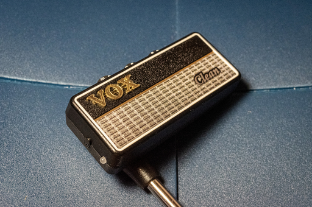
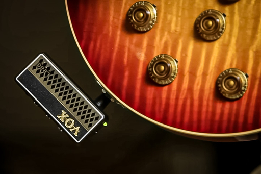
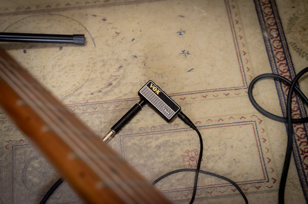

最初に。
このテキストは Amazon に書いた VOX amplug2 clean のレビューを若干の校正を加えて転記したものなので、もう読んだとか VOX amplug2 clean はすでに持っていて使いこんでいるって人は Browser を Let's Close!!
目下 Jazz ギターを勉強中のため Clean を選択。
Pure Clean、Twin Clean、Boutique OD の 3 つのトーン・キャラクターをパワー・ボタン兼モード・ボタンを押すことでローテーションさせて切り替えることができる。
Pure Clean は少し線が細目のクリーン・トーン、Twin Clean はFender Twin Reverb をシミュレートしていると思われるクリーン・トーン、Boutique OD は Crunch からオーバードライブまでのサウンドが得られる。
エフェクトは Effect off、Chorus、Delay、Reverb の 4 つを FX ポタンを押すことでローテーションで切り替えて使うことができる。また FX ボタンとモード・ボタンを同時に押すことで各エフェクトのキャラクターを変えることができる。
コントロールは Gain、Tone、Volume の 3 つ。基本的な音作りはこの 3 つのコントロールとギター側の Volume と Tone で行う。他のコントロールもついているギターではそれらのコントロールも使って音作りをする。
がもちろんこの製品でライブやレコーディング向きに一生懸命音作りをするのは時間無駄でしかない。むろん遊びとしての音作りならありだが。本来この製品はそこそこ気持ちよく練習するためのものだ。
製品はブリスターパックに入ったものが送られてくる。保証書を兼ねるマニュアルはブリスターパックの台紙に挟まれている。なのでポイッと捨ててはいけない。
しかし仮にマニュアルを紛失しても公式サイトで公開されているオーナーズ・マニュアルを参照したりダウンロードすることはできる。こちらにも保証書が添付されているが当然店舗印や日付等は入っていないので購入を証明する何かが別途必要になるはず。なので繰り返すが台紙をぽいっと捨ててはいけない。
製品自体はシンプルな仕様なので 10 分もいじっていれば取扱説明書はなくても通常は困らなくなる。しかし日本語のマニュアル兼保証書の現物は製品に添付されているもののみになるので、くどいのは承知で繰り返すが決して破棄してはならない。重要なことなので何度も書いた。
なお Amazon の規約で外部サイトの URL が貼れないために公式サイトの URL が貼れないが "VOX ampulug2" で検索すれば公式サイトがヒットする。Document というリンクがあるのでそこを開いてオーナーズ・マニュアルをダウンロードすると良い。
サウンドについては感想程度のことしか述べない。というのはあまりに常識的だが、楽器、弦、ピック、演奏者のフィンガリング、ピッキング、ヘッドホンが変われば音のキャラクターはがらっと変わる。
なお自分は Twin Clean のサウンドがかなり気に入っている。本物の Fender Twin Reverb にどれだけ似たトーン・キャラクターなのかは Twin Reverb を触った経験がないのでわからないが ( なんでスタジオって Marshall か Roland の JC しか置いてないんだろう？ )、割といい音を出してると思ってる。
それと Amazon では壊れやすいというレビューが悪目立ちしているが、軽くかつ低価格にするために筐体は樹脂製、いわゆるプラスティック製である。
落としても壊れない、雑に扱っても壊れない、ギターにつけっぱなしでギターをそのあたりに立て掛けて楽器の重みを加えても壊れない、等々そういった仕様を満たすなら、筐体をエフェクター並みに頑丈な金属製の筐体にし、強度上の弱点になる 180 度回転するプラグを廃止し、前バージョンのような固定式に戻す必要がある。
そうなると重さはオーバードライブなどのフットペダル程度には重くなるだろうし、新たに金型を起こすのも含めてコストが激増し価格は 2 万円を遥かに超えてしまうのではないかと予想する。しかも機能が増えるわけでもないのにやたら重くて使いにくいものになる。
壊れやすいと言ってる連中に訊きたいがそんな製品を買いたくなるか？
Final Answer としては本製品は安価でありつつ重さも軽くするためにプラスチックの筐体を採用しているのだから壊さないように丁寧に扱えとしか言えない。
それが嫌なら据え置き型のでかいアンプを買うしかない。家庭環境の都合ででかいのがだめなら YAMAHA の THR5 なんかお勧めだ。安くて出力控え目でなおかついいアンプは世の中にいっぱいある。
《追記》
おそらくこの製品が壊れやすいと主張しているのはテレキャスターもしくはレスポールユーザじゃないだろうか。
これらのギターのようにボディー下部の側面にジャックがあるギターだと amplug は画像のように取り付けることになる。
なにも考えずに amplug をつけたままクソ重いギターを机などに立て掛けて床に置くとなにが起きるのかは一目瞭然だ。製品の形状から、てこの原理でプラグ周辺が一瞬で破壊される。
amplug が脆弱な不良品なのではなく楽器すら雑に扱ってるから当然のように壊れるんだよ、としか言えない。
それによく考えてほしいのだけど、このようなうっかりミスのケースでは製品が簡単に壊れてくれないと非常に困る。
つい先程てこの原理でプラグ周辺が一瞬で破壊されると書いた。このとき力が加わるのは amplug にだけじゃぁない。同じだけの力がギターのジャックにかかる。
amplug が壊れなければ壊れるのはギターのジャック側だ。
壊れるのがジャックだけならいいが、なにせまるでバールでえぐるような力がジャックにかかるのだから、おそらくボディー材も無事では済まない。
amplug が壊れても損害は 5 千円未満だが、ギターの修理が 5 千円で済むはずがない。
自分のヘマでギターが壊れる代わりに amplug が壊れてくれてることを忘れてはいけない。
《追記》
と偉そうに説教臭く書いてきたが自分もギターを立て掛けて床に置いたりすることもある。
なので多少は建設的に、ギターをうっかりポンと床に立て掛けて置いても amplug を壊さない方法を考えてみた。
答えは簡単で amplug をギターに直接取り付けるんじゃなくて、画像のように標準フォンプラグのメスメスのアダプターを使って、ギターから伸ばしたシールドでつないでやれば良い。
少なくともギターを置いただけ ( 置いただけではなくてわざわざ amplug が壊れるように置いたわけだが ) で amplug が破損することから逃れることにはなる。
踏み潰してしまう？そこまでは知らん。日々の生活での所作を見直せ。